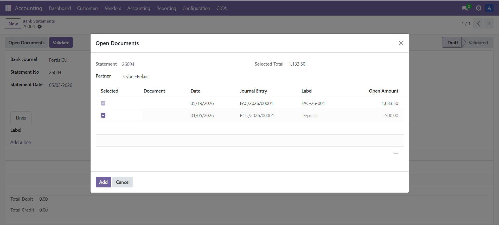
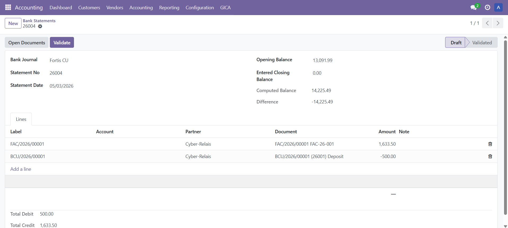
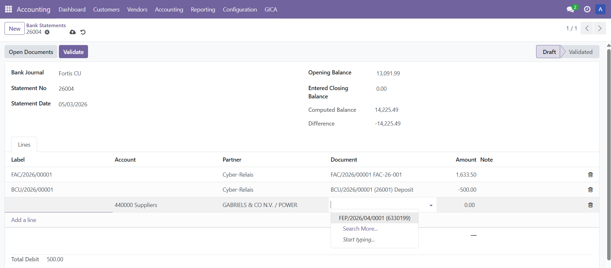
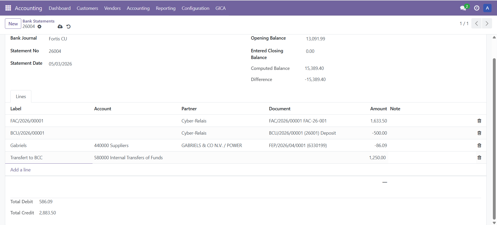
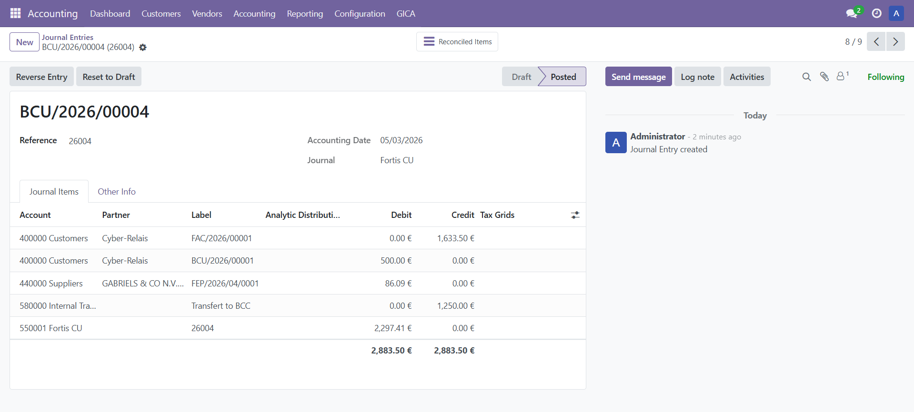
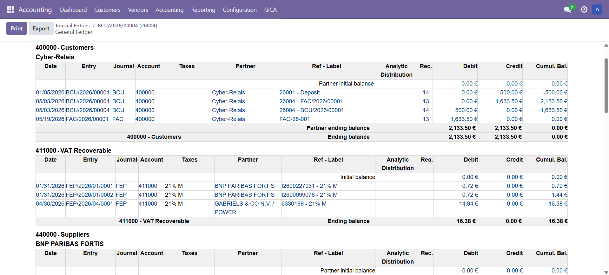
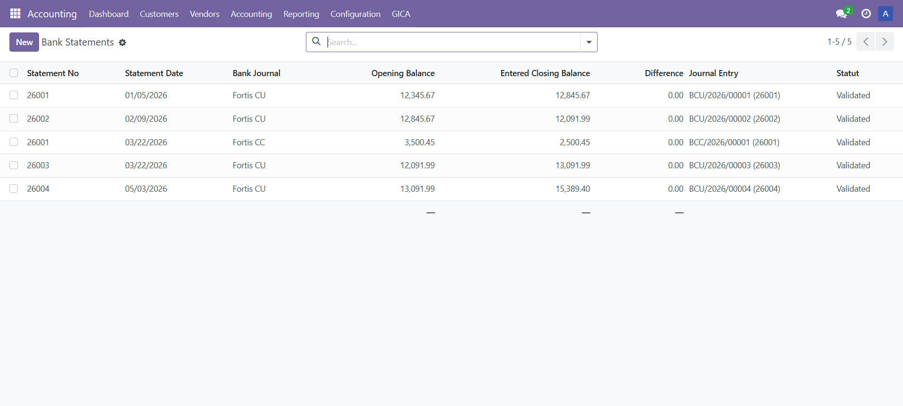
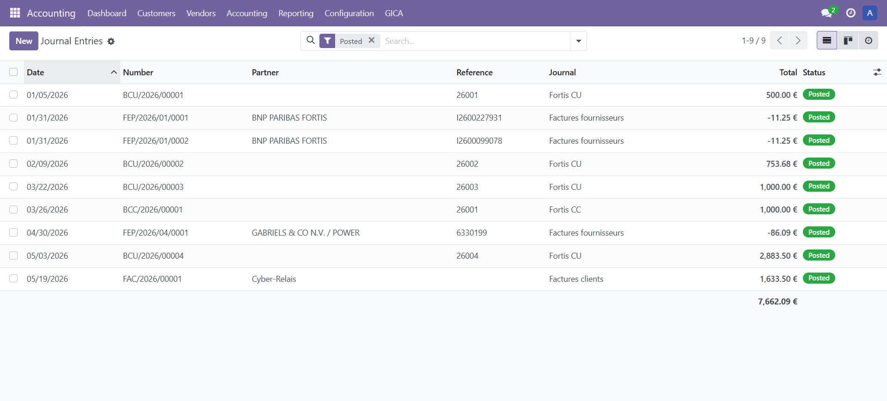

GICA Bank Statement adds a traditional manual bank statement entry workflow to Odoo Community, inspired by the accounting workflow used in the GICA ERP.
The first screenshots show the manual combinatory selection of open documents, which is one of the key features of the module.
Available in English, French and Dutch.
Select several open customer or supplier documents, such as invoices, credit notes or advance payments. As documents are selected or deselected, the total amount is updated in real time. This allows the accountant to quickly reconstruct the exact amount appearing on the bank statement.

The selected open documents are inserted into the bank statement.

A single open document can also be selected directly on a statement line.

Manual lines can be entered using a general account, for example a transfer account.

After posting, the statement is displayed with standard debit and credit accounting lines.

The customer ledger shows the reconciliation between the invoice and the advance payment.

Several bank statements can be managed, including statements from different bank journals.

The generated accounting entries remain standard Odoo journal entries.
